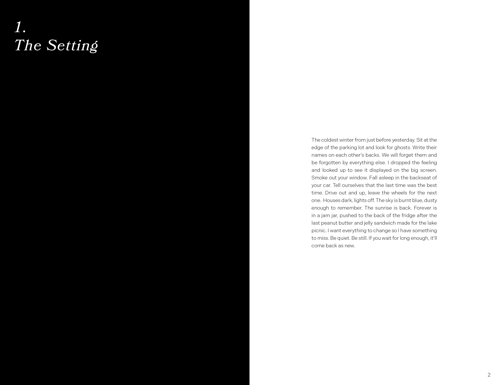

The Human Condition
This zine replicates my personal feelings of home. It is intended to portray growing up in the American suburbs, with all of the emotions that come with it. There are three sections: The Setting, The Stomach, and The Forgetting. Each one depicts different layers of my hometown and my relationship with it. They all begin with a block of text that I wrote, while the rest of the zine contains bits of writing from various different sources, each one contributing to the chapter's overarching themes. There are blurred black-and-white images to mimic the atmosphere of sitting in a dark room, the only light coming from a fuzzy television screen.
